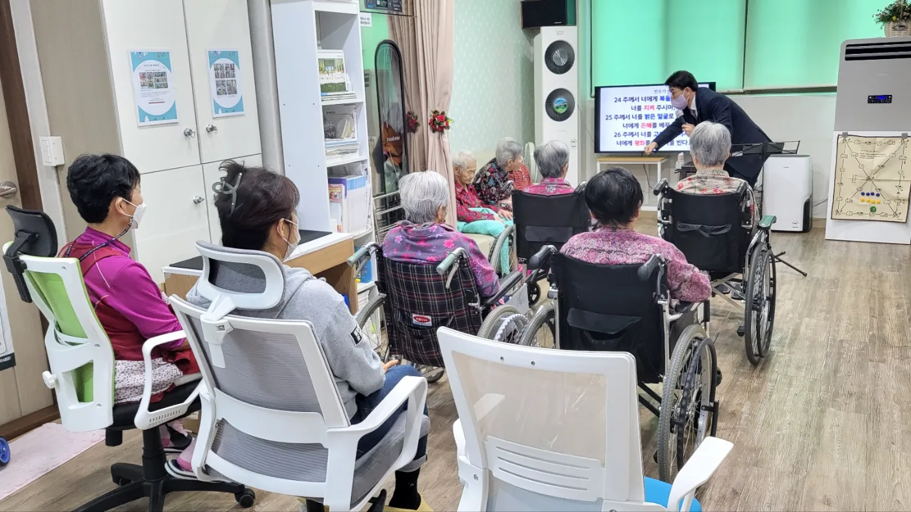

Since 2017
행복한교회
행복한교회
교회 소개
행복을 나누는
믿음의 공동체
2017년 12월 10일, '우리 보금자리 요양원'에서 첫 예배로 시작된 행복한교회는 예수 그리스도의 사랑을 지역 사회와 함께 나누는 건강한 공동체입니다.
- 요양원 섬김 사역
- 장터 물전도 사역
- 복음 전도 사역
- 교회 연합 사역
날마다 예수 그리스도로
행복을 경험하는 교회
2017년 12월 10일, '우리 보금자리 요양원'에서 첫 예배로 시작된 행복한교회는 예수 그리스도의 사랑을 지역 사회와 함께 나누는 건강한 공동체입니다.
주일 오전·오후 예배와 수요기도회 말씀을 유튜브로 들으실 수 있습니다.

문경 시장 상인들과 나누는 정겨운 시간입니다.

어르신들과 함께 주님의 사랑을 나눕니다.

첫 예배의 뜨거운 은혜를 기억합니다.
교회가 처음이셔도, 오랜만에 다시 오셔도 괜찮습니다. 편안한 마음으로 오세요.